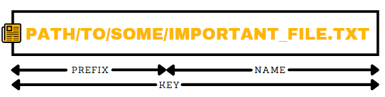
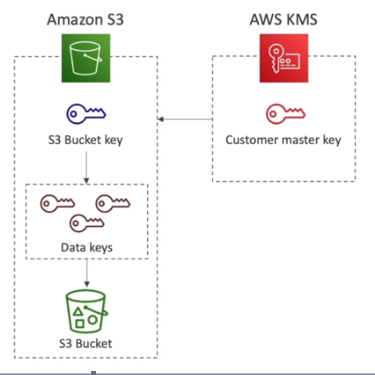

Simple Storage Service (S3)¶
Overview¶
- S3 buckets are bound to a region.
- Buckets must have a globally unique name.
- Public access is blocked by default.
- Bucket names must be DNS compliant -
- No uppercase
- No underscore
- 3-63 chars
- Not an IP
- Must start with a lowercase letter or number
S3 Objects¶

- Max object size is 5TB.
- Use multi-part upload for anything over 5GB.
- Add extra metadata using key/value pairs.
- Can be tagged.
- Have a version id if versioning is enabled.
- Objects within the bucket can have different ACLs, encryption methods, storage classes etc.
- Use Pre-signed URLs to access an object without using the public URL.
Versioning¶
- Enabled at the bucket level.
- New version generated each time an object with the same key is over-written.
- Files not versioned prior to enabling versioning will have a
nullversion id. - Suspending versioning doesn't delete the previous versions.
- Delete marker is created when a file is deleted. Old versions of the file will remain accessible.
- Restore a file by deleting the delete marker.
Encryption¶
There's four ways to encrypt objects, and a bucket can have a default encryption method.
| Method | Description |
|---|---|
| SSE-S3 | Use keys handled and managed by AWS. |
| SSE-KMS | Use AWS KMS to manage encryption keys. |
| SSE-C | Manage your own encryption keys. |
| Client Side Encryption | Customer fully manages the encryption/decryption process on the client side. |
SSE-S3¶
- Encryption keys managed by AWS S3.
- Uses AES-256.
- Must add the header
"x-amz-server-side-encryption": "AES256".
SSE-KMS¶
- Encryption keys are managed in AWS KMS.
- Can control who has access to the encryption keys.
- Usage is logged in CloudTrail.
- Customer Master Key (CMK) is used to encrypt S3 objects.
- Requires the
"x-amz-server-side-encryption": "aws:kms"header. - Needs a KMS key policy that authorizes the user/role.
SSE-C¶
- Uses a data key provided by the user.
- Key isn't stored by S3.
- Must use HTTPS.
- Encryption key needs to be in the HTTP header.
Client Side Encryption¶
- Customer fully controls the encryption/decryption cycle.
- Clients must encrypt/decrypt the object themselves.
- S3 Encryption Client library can help do this.
Encryption in Transit (TLS/SS)¶
- S3 endpoints can be utilized using HTTP, or HTTPS.
-
Force SSL by creating a
DENYrule on the condition"aws:SecureTransport": "false". Settingaws:SecureTransporttotruewould allow anonymous GetObject if using SSL.- On{ "Version": "2012-10-17", "Statement": [ { "Sid": "AllowSSLRequestsOnly", "Action": "s3:*", "Effect": "Deny", "Resource": [ "arn:aws:s3:::awsexamplebucket", "arn:aws:s3:::awsexamplebucket/*" ], "Condition": { "Bool": { "aws:SecureTransport": "false" } }, "Principal": "*" } ] }SSE-KMS, need to limit the encryption headers to SSE-KMS only, and deny on no header.{ "Version": "2012-10-17", "Statement": [ { "Sid": "DenyIncorrectEncryptionHeader", "Effect": "Deny", "Principal": "*", "Action": "s3:PutObject", "Resource": "arn:aws:s3:::bucket_name/*", "Condition": { "StringNotEquals": { "s3:x-amz-server-side-encryption": "aws:kms" } } }, { "Sid": "DenyUnencryptedObjectUploads", "Effect": "Deny", "Action": "s3:PutObject", "Resource": "arn:aws:s3::bucket_name/*", "Condition": { "Null": { "s3:x-amz-server-side-encryption": true } } } ] }
Default Encryption¶
- Bucket policies are evaluated before default encryption.
- Can use AES-256 via
SSE-S3, orSSE-KMS.
S3 Bucket Key¶
- Reduces API calls to KMS (reduces costs).
-
Encryption Workflow -

- AWS KMS generates a S3 bucket key using the CMK.
- S3 generates a Data Encryption Key (DEK) using the S3 Bucket Key.
- S3 Objects are encrypted using the Data Encryption Keys (DEKs).
S3 Security¶
User Based Security¶
- Controlling the API calls that are allowed for a given user using IAM policies.
- The IAM Principal (user) can access an S3 Object if:
- The users IAM permissions allow it, or the resource policy allows it.
- There's no explicit DENY on the bucket policy.
Resource Based Security¶
- Object ACL can apply ACLs at the object level.
- Bucket ACL applies to the whole bucket. Not commonly used.
Bucket Policy¶
- Applies to the whole bucket.
- Rules are defined in the S3 console, which allows cross-account access.
- Can be applied to bucket and objects.
- Blocking public access to buckets and objects can be done through:
- Access Control Lists (ACLs).
- A new public bucket, or access point policies.
- Blocking public and cross-account access to buckets and objects can be done through:
- Any public bucket or access point policy.
- Blocking public access to buckets can be set at the account level.
Example Bucket Policy
{
"Version": "2012-10-17",
"Statement": [
{
"Sid": "PublicRead",
"Effect": "Allow",
"Principal": "*",
"Action": [
"s3:GetObject"
],
"Resource": [
"arn:aws:s3:::mybucket/*"
]
}
]
}
Networking¶
- A VPC endpoint can be used to access a private bucket from other resources in the same VPC.
Logging & Auditing¶
- S3 access logs can be stored in another S3 bucket.
- API usage is logged to CloudTrail.
S3 Access Logs¶
- Logs all S3 Bucket access to another bucket.
- Use data analysis tools/Athena to analyse the access logs.
- Don't send logs to the same bucket that's being monitored.
- Can define a prefix to use on all of the generated logfiles.
User Security¶
MFA-Delete¶
- Requires MFA to delete an object version (adding a marker), or suspend versioning on the bucket.
- Versioning must be enabled on the bucket.
- Can only be enabled/disabled by the bucket owner.
- Can only be configured via the CLI.
Pre-signed URLs¶
- Can be created via CLI or the SDK.
- Default expiration is 3600secs. Change using the
--expires-inargument. - Users given the pre-signed URL inherit the permissions of the person that generated the URL.
- The S3 signature version needs to be s3v4.
Generating a Pre-signed URL¶
$ aws configure set default.s3.signature_version s3v4
$ aws s3 presign <S3Uri> --expires-in <seconds> --region <bucket region>
Use Cases¶
- Allow only logged in users to download a resource.
- Dynamically generating URLs due to high user churn.
- Temporarily allow a user to upload a file to a specific location in the bucket.
S3 Static Websites¶
- Accessible via
<bucket name>.s3-website-<region>.amazonaws.com - Bucket needs to be public, with a S3 policy that allows public reads, otherwise you'll get a 403 error.
- Bucket objects need to be un-encrypted.
- Can set a custom index and error page.
- Can define redirection rules.
CORS¶
- Allows the website to make requests to other origins than have been white-listed.
- Uses the
Access-Control-Allow-Originheader to control permitted origins.
S3 CORS¶
- Allow a specific origin via an explicit name, or use "*" to allow all origins.
- CORS headers must be enabled on cross-origin buckets, to allow a client to do a cross-origin request.
Consistency Model¶
PUTon new objects has Read after write consistency.PUT/DELETEon existing objects is eventually consistent.- There's no way to request strong consistency.
S3 Replication¶
- Asynchronous.
- Must enable versioning in the source and destination buckets.
- Requires an IAM role with permissions to copy between buckets.
- Only new objects created after replication is enabled will be copied across.
- Deletes are not replicated.
- Deleting without a
version idwill create a delete marker. - Deleting with a version id will delete in the source only.
- Deleting without a
- No replication chaining.
- Where
bucket1is replicating intobucket2, andbucket2is replicating intobucket3, objects created inbucket1won't be replicated tobucket3.
- Where
- Can replicate the whole bucket, or only specific prefixes/tags.
- Can replicate objects encrypted with AWS KMS.
Cross-Region Replication (CRR)¶
- S3 replication between buckets in different regions.
- Used for compliance, low latency access, replication across accounts.
Same Region Replication (SRR)¶
- S3 replication between buckets in the same region.
- Used for log aggregation, live replication between prod and test accounts.
S3 Storage Classes¶
S3 Standard - General Purpose¶
- 11 9's durability.
- 4 9's availability.
- Can handle upto 2 concurrent facility failures.
- General purpose.
- Minimum storage duration is 30 days.
- No retrieval fee.
Use Cases¶
- Big data analytics.
- Mobile & gaming applications.
- Content distribution.
S3 Standard - Infrequent Access (IA)¶
- Data that isn't accessed very often, but needs to be retrieved quickly when needed.
- 11 9's durability.
- 3 9's availability.
- Cheaper than S3 Standard.
- Minimum storage duration is 30 days.
- Retrieval fee per GB retrieved.
Use Cases¶
- DR.
- Backups.
S3 One Zone - Infrequent Access¶
- Same as IA, but data stored in a single AZ.
- 11 9's durability of objects in a single AZ.
- 99.5% availability.
- Low latency, high throughput.
- Supports SSL for encryption at in transit/at rest.
- 20% cheaper than IA.
- Minimum storage duration is 30 days.
- Retrieval fee per GB retrieved.
Use Cases¶
- Secondary backup copies of on-prem data.
- Storing data that could be re-created if needed.
S3 Intelligent Tiering¶
- Low latency, high throughput.
- Additional cost to monitor objects and automatically move them between two different access tiers.
- 11 9's durability.
- 3 9's availability.
- Resilient to loss of entire AZ.
- Minimum storage duration is 30 days.
- No retrieval fee.
Glacier¶
- Low cost.
- Intended for archiving/backups.
- Retaining data for a long time (multiple years).
- Alternative to magnetic tape storage.
- 11 9's durability.
- Each object is called an Archive and can be upto 40TB.
- Archives are stored in Vaults, not buckets.
- Minimum storage duration is 90 days.
- Retrieval fee per GB retrieved.
Retrieval Options¶
- Expidited (1-5mins).
- Standard (3-5hrs).
- Bulk (5-12hrs).
Glacier Deep Archive¶
- Cheapest option.
- Minimum storage duration is 180 days.
Retrieval Options¶
- Standard (12hrs).
- Bulk (48hrs).
Lifecycle Configuration (Policies)¶
- Lifecycle rules define when to move an object to another storage class.
- Expiration actions define when an object/previous versions will be deleted, or when to clean up incomplete multi-part uploads.
- Rules can be applied against a specific prefix, or object tags.
Lifecycle Rule Actions¶
- Transition current versions between storage classes.
- Transition previous versions between storage classes.
- Expire current versions.
- Permanently delete previous versions.
- Delete expired delete markers or incomplete multi-part uploads.
Performance¶
- Latency of 100-200ms.
- 3,500 PUT/COPY/POST/DELETE requests per second, per bucket prefix.
- 5,500 GET/HEAD requests per second, per bucket prefix.
- Using SSE-KMS will impose KMS limits (fixed number of API requests per second).
Optimising¶
- Use multi-part uploads for files over 100MB. Mandatory for 5GB+.
- Use S3 Transfer Acceleration for uploads. Transfers the file to an edge location, and forwards it from there to the S3 bucket using the private AWS network.
- Use S3 Byte-Range fetches to download files (simlar to multi-part uploads).
- Only retrieve part of the object (ie: the head of a file).
S3 Select/Glacier Select¶
- Retrieve less data using SQL via server side filtering.
- Filter by rows and columns.
- Reduces network transfer, client-side CPU usage.
- Useful for structured data (csv files etc).
Event Notifications¶
- S3:ObjectCreated, S3:ObjectRemoved, S3:ObjectRestore, S3:Replication
- Can filter by object name.
- Good use case, is generating thumbnails when an image is uploaded to S3.
- Delivered within seconds.
- Bucket versioning is required to ensure an event is sent for every successful write.
- Can send the event to SQS, SNS or Lambda function.
S3 Object Lock¶
- Write Once, Read Many.
- Block object version deletion for a specified amount of time.
Glacier Vault Lock¶
- Write Once, Read Many.
- Lock the policy for future edits.
- Useful for compliance & data retention.
Last update: June 30, 2021